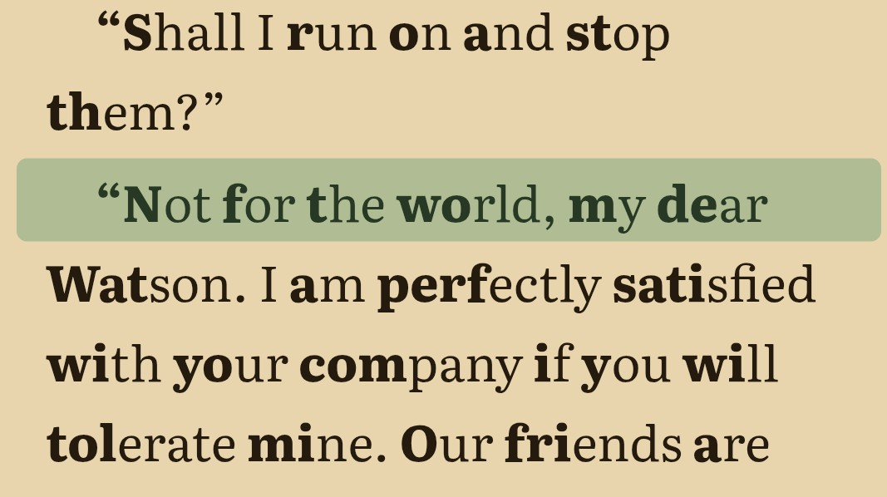

Three reading modes
Choose Flow, Text Anchor or Traditional ebook. Flow and Text Anchor share sentence highlighting, adjustable pacing and optional word tracking. Traditional ebook uses manual page turns.
A line of focus.
Sentence highlighting, adjustable pacing and three ways to read your own books.
In development · Android first
Text Anchor development preview
WHY RIVI?
Rivi means “line” in Finnish. It began with a simple idea: a line of focus to help you keep your place as you read.
Flow and Text Anchor highlight complete sentences and guide reading at your chosen pace. Traditional ebook mode gives you fixed pages to turn yourself. Choose the type and spacing that feel comfortable.
Choose from Georgia, Literata, a sans-serif font, Atkinson Hyperlegible, or OpenDyslexic.
READING
Choose Flow, Text Anchor or Traditional ebook. Flow and Text Anchor share sentence highlighting, adjustable pacing and optional word tracking. Traditional ebook uses manual page turns.
Emphasise the beginnings of words, adjust type size, margins and spacing, and choose day, night or sepia themes. In Flow and Text Anchor, an optional Focus veil fades earlier text and blurs upcoming text.
Keep books organised with categories, favourites and series. Bookmarks and saved progress help you pick up where you left off.
The active sentence moves down the page. The text scrolls when needed to keep your place visible.
The text moves upward past an anchor. Choose movement line by line or sentence by sentence while the whole sentence stays highlighted.
Read fixed pages and swipe to turn them. Automatic pacing, word tracking and the Focus veil do not apply in this mode.

LIBRARY
Import DRM-free EPUB, TXT, HTML, Markdown and FB2 books, including compressed FB2 files. Keep your place with saved progress, bookmarks and notes, and export a backup of your library.
Your books, preferences and progress stay on your device. With Premium, you can browse and import free public-domain books from the Project Gutenberg catalogue.
Compare Free and Premium for library limits and included features.
SUPPORTED FORMATS
| Format | Reading support |
|---|---|
| EPUB, TXT, HTML, Markdown (.md), FB2 | Flow, Text Anchor and Traditional ebook, with typography, bookmarks and saved progress |
| Basic document viewing only. RIVI’s highlighting and guided-reading features are unavailable. |
FREE & PREMIUM
Free includes every reading mode and up to five books. Premium adds an unlimited library and the tools below.
| Feature | Free | Premium |
|---|---|---|
| Library size | Up to 5 books | No app-imposed limit |
| Flow, Text Anchor & Traditional ebookSentence highlighting and adjustable pacing in Flow and Text Anchor | Included | Included |
| Bionic Reading & supported file formats | Included | Included |
| Bookmarks, search & saved reading position | Included | Included |
| Built-in themes, typography & accessibility tools | Included | Included |
| Reading statisticsOn-device reading time, pace, activity and per-book insights | Not included | Included |
| Custom reading themesCreate your own palettes with contrast checks | Not included | Included |
| Series managementSet reading order and continue to the next volume | Not included | Included |
| Automatic category suggestionsReview suggestions before applying them | Not included | Included |
| Built-in Project Gutenberg catalogueDiscover and import public-domain books inside RIVI | Not included | Included |
Both options include the same features. Prices are shown in the app store before purchase.
Your existing books remain readable, even if your library contains more than five books. All Free reading features stay available. Premium features become unavailable, and new imports resume when your library has fewer than five books or you reactivate Premium.
RIVI is still in development. This comparison reflects the current app; final availability and store offers will be confirmed at release.
RIVI · PRIVACY
Last updated 24 October 2026
This policy describes how RIVI, made by Kapy Labs, handles information. RIVI stores your reading library locally. Optional online features involve the services described below.
Imported book files, extracted resources, library metadata, reading positions, bookmarks, categories, preferences, custom themes, reading statistics, recent free-book searches and dictionary results are stored on your device. A folder location may also be saved when you choose a folder for scanning.
RIVI does not upload your library or reading history to a Kapy Labs server, and does not require a RIVI account.
When you search the free-book catalog, RIVI sends the search query and requests for book metadata to Gutendex and may request additional metadata from Open Library. Book details, covers and book files may be requested from Project Gutenberg. These services receive normal connection information such as your IP address.
When you open a book’s details, RIVI may automatically search Open Library using the book’s title and author, or request updated details using a previously matched work identifier. It may retrieve a community rating and a missing description. You can also search for a match and choose metadata or a cover manually; cover requests go to Open Library’s cover service. Retrieved details and your selections are saved locally. These requests share book metadata and normal connection information, not the book file or your reading history.
When you look up a word, RIVI sends that word and the selected dictionary language to Free Dictionary API and English Wiktionary. If they do not return a result, RIVI may use Datamuse as a fallback. Results are cached locally so the same definition can be opened again without a new request.
Project Gutenberg privacy policy
In store builds configured for purchases, RIVI uses RevenueCat and the platform app store to check Premium access, process purchases and restore purchases. RevenueCat uses an app user identifier and purchase information for entitlement management and purchase reporting. Payment details are handled by the app store rather than entered into RIVI.
RIVI has no advertising or separate reading-behaviour analytics SDK. Your reading statistics stay on your device. RevenueCat’s purchase reporting is separate from those local reading statistics.
RIVI does not currently ask for access to your camera, microphone, location, contacts or photo library. Files and folders become available to RIVI only when you choose them through the system picker.
Imported copies are kept in the app’s private storage. Exported backups are saved to the destination you choose; that destination may have its own privacy practices.
RIVI keeps imported books and its database in app-private storage and uses encrypted HTTPS connections for the online features described above. No storage or transmission method can be guaranteed completely secure.
Local information remains until you remove it, erase RIVI’s data or uninstall the app. Removing a book from RIVI removes its imported copy and related library data; it does not delete your original source file.
Exported backups and device-system backups are managed separately. Uninstalling RIVI does not cancel an app-store subscription or delete purchase records held by the store or RevenueCat.
Kapy Labs is responsible for RIVI’s app-specific data handling. If you contact us, we receive the information you choose to send.
This policy may be updated as RIVI develops. The date at the top identifies the current version.